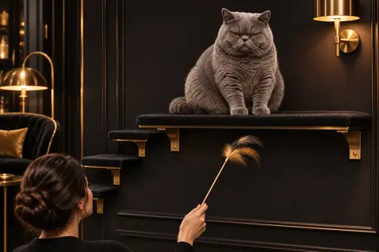

Koci Notatnik / Krótkie opowieści
Rezydencja · 2 min czytaniaPatrzę na człowieka z góry. Wreszcie odpowiedni poziom zarządzania.
Człowiek zapytał, dlaczego siedzę tak wysoko. Spojrzałem na niego z półki. Kochany, po całym dniu na twoim poziomie potrzebuję trochę perspektywy.

Dlaczego kot lubi siedzieć wysoko?
Wysoko położone miejsca mogą dawać kotu poczucie bezpieczeństwa i dobry widok na otoczenie. Powinny być stabilne, dostępne i dopasowane do jego sprawności.
Biuro z widokiem na podwładnego
Wybrałem ten dom z myślą o rozwoju. Człowiek zrozumiał to jako większą miskę. Ja rozumiałem również awans pionowy.
Z góry widzę kanapę, wejście i drogę do kuchni. Personel próbuje przemykać z przekąską, jakby moje stanowisko obserwacyjne było dekoracją. Słodka wiara w niewidzialność człowieka z szeleszczącą paczką.
Najpierw postawił mi krzesło. Potem stabilny podest. W końcu zamontował szeroką półkę ze stopniami. Dobrze, kochany. Pierwsza inwestycja w firmie, która rzeczywiście prowadzi na wyższy poziom.
Usiadł pod spodem i machał zabawką. Miałem widok, rozrywkę i osobistego animatora. Dziwię się, że inni prezesi tyle płacą za podobne warunki.
Wieczorem zszedłem po stopniach. On odetchnął. Myślał, że wracam do niego. Nie. Zaczynała się kontrola parteru.
Co ma zapamiętać Twój człowiek
- Zapewnij szerokie, solidnie zamocowane półki lub stabilny drapak.
- Dodaj stopnie i łatwą drogę zejścia, szczególnie starszemu kotu.
- Zabezpiecz okna i usuń kruche rzeczy; nie zdejmuj kota szarpnięciem.